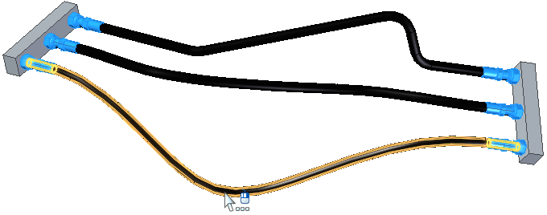
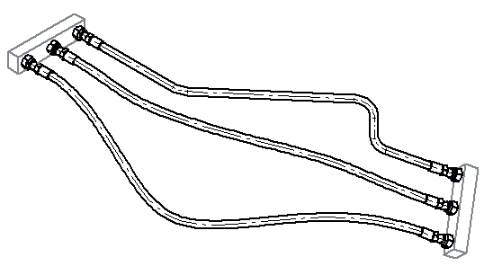
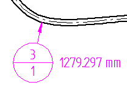

Create a parts list for flexible hoses and tubing
You can use this procedure to create a flat length parts list for adjustable (flexible) tubing and hoses, in which the same part can be bent in different orientations to accommodate different assembly layouts, yet retain the same item number and properties as the rigid tubes in the assembly.
Tubes and hoses are designed in the Tools tab→Environs group→XpresRoute application. They are defined as adjustable in the Assembly environment. To learn how to do this, see the Adjustable tube design workflow.
A flat length parts list shows the same part on a different row for each of its different lengths. This identifies the quantity of each length to be cut from the raw material, such as for rubber hoses and tubing. You can include both rigid and adjustable tubes in the same parts list, but this example is for a top-level assembly that contains only adjustable tubing.

-
Choose the Home tab→Tables group→Parts List command .
-
On the drawing sheet, click an assembly drawing view that shows the hoses and tubing.
The tube centerlines shown in the drawing view represent the keypoint curves created in XpresRoute.

-
On the Parts List command bar, click the Properties button.
-
In the Parts List Properties dialog box, click the Columns tab and do the following:
-
In the Properties list, select Adjustable Tube, and then click the Add Column button.
Note:The Adjustable Tube column displays a YES value for all tubes that are defined as adjustable in the assembly.
-
In the Properties list, select Tube Flat Length, and then click Add Column.
Note:The flat length is the length of flexible hoses or tubing when they are stretched along their path.
-
Use the above technique to add any of the following columns that you want to show in your parts list:
-
Tube Minimum Flat Length
-
Tube Bend Radius
-
Tube End Treatment (End 1) or Tube End Treatment (End 2)
-
Tube Inside Cross Section Area
-
Tube Inside Volume
-
Tube Outer Diameter
-
Tube Wall Thickness
Note:The tube properties reference both tubes and hoses. For the property values to be displayed in the parts list, they must be defined in the XpresRoute tubing assembly in the Tube Options dialog box and the End Treatment Options dialog box.
-
-
-
In the Parts List Properties dialog box, click the Options tab and do the following:
-
In the Show These Components in the Parts List section, verify the Tubes check box is selected, and clear any components that you do not want to show.
-
Use the Component Type sort priority list to specify the row order for items listed in the parts list.
-
To show the different lengths of flexible hoses and tubes in different rows—In the Tube Uniqueness section, select the Flat Length check box.
-
In the Item Numbers section, select the item numbering options you want to use.
-
-
Click the List Control tab, and then select one of the following:
-
Atomic list (all parts)
-
Exploded list (all parts and subassemblies)
-
-
Click Apply to close the dialog box.
-
Move your cursor to the location on the drawing sheet where you want the parts list, and then click.
For legibility, the parts list for this example is shown in a separate table. It was generated using the Atomic list (all parts) option.

|
Item Number |
File Name (no extension) |
Quantity |
Adjustable Tube |
Tube Flat Length |
Tube Bend Radius |
Tube Inside Cross Section Area |
Tube Inside Volume |
Tube Outer Diameter |
Tube Wall Thickness |
|---|---|---|---|---|---|---|---|---|---|
|
1 |
Master Cylinder |
2 |
|||||||
|
2 |
fitting -8FF STR FM |
2 |
|||||||
|
3 |
Brake-Line-Tube |
1 |
Yes |
1279.297 mm |
50.000 mm |
28627.76 mm^3 |
28627.76 mm^3 |
19.500 mm |
3.000 mm |
|
4 |
Brake-Line-Tube |
1 |
Yes |
1171.434 mm |
50.000 mm |
28627.76 mm^3 |
28627.76 mm^3 |
19.500 mm |
3.000 mm |
|
5 |
Brake-Line-Tube |
1 |
Yes |
1162.768 mm |
50.000 mm |
28627.76 mm^3 |
28627.76 mm^3 |
19.500 mm |
3.000 mm |
-
A flat length value displayed parenthetically ( ) indicates an approximate value.
-
You can extract the flat length value into the item balloons using property text.
-
Display the sheet with the drawing view containing the item balloons corresponding to the parts list.
-
On the Select command bar, click the SmartSelect button.
-
Click one of the item balloons in the assembly drawing view.
-
In the SmartSelect Options dialog box, verify Element type is selected and click OK.
-
All of the item balloons are now highlighted on the drawing view. Use Ctrl+click to deselect the balloons that do not reference tubes and you do not want to update.
-
On the Balloon command bar, click in the Suffix box to position the cursor, and then click the Property Text button .
For more information, see Show document properties in balloons.
-
In the Select Property Text dialog box, set the Source=From graphic connection, and then double-click the Tube Flat Length property. Click OK to update all of the selected item balloons on the drawing with values for the tube flat length.

Note:You can use the same process to add Prefix text to all of the selected item balloons, such as Tube Flat Length.
-
How do I
Create a parts listCreate a subassembly parts list
Create an exploded parts list
Create a total length parts list
Create a family of assemblies parts list
Exclude parts from an exploded parts list
Open a model from a parts list
Example: Show custom occurrence properties in a parts list
Example: Show custom properties and materials in a parts list
Example: Show sheet metal material thickness in a parts list
Renumber a parts list
Change the active parts list
Display assembly occurrences in a drawing view or parts list
Convert a parts list to a table
Copy a parts list to the clipboard
Learn more
Parts listsFamily of Assemblies (FOA) parts lists
Assembly part views and parts lists
Subassembly drawing views and parts lists
Exploded parts lists
Custom occurrence properties in parts lists
Occurrence quantity overrides in parts lists
Item numbers in parts lists
Saving and reusing the parts list format
Look up more details
Parts List commandParts List command bar
Parts List Properties dialog box
Copy Contents command
Convert To Table command